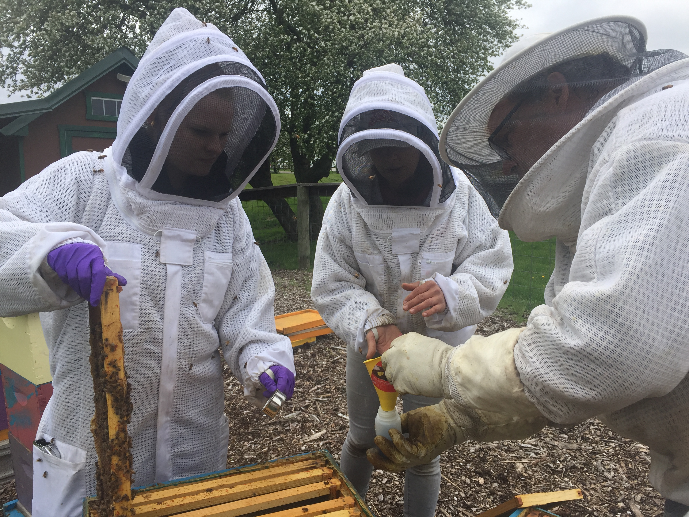
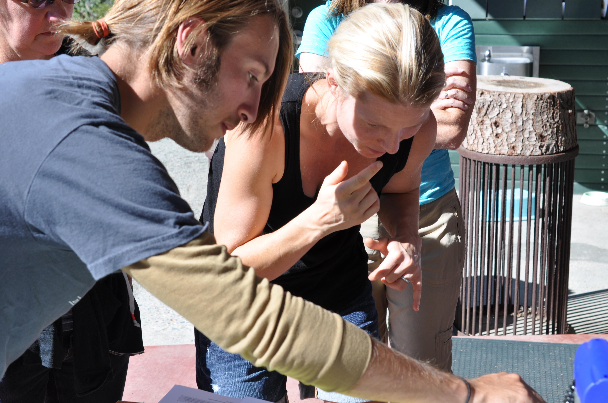
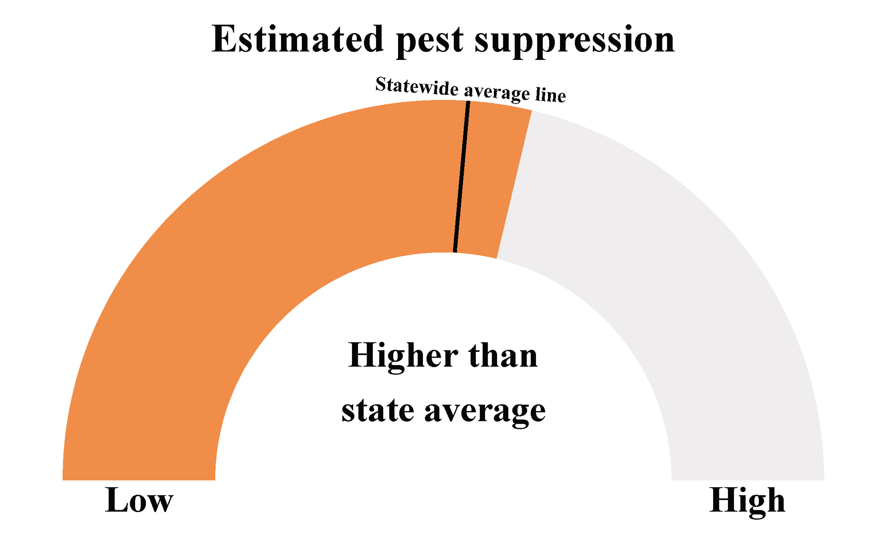

National goals revolutionize ecology on farms
The Obama administration set ambitious national goals for honey bees, pollinator habitat, and monarch butterflies. These policies altered the direction of pollinator research in the United States, and increased funding for farmers to conserve pollinators.
Check out my policy synthesis with Michigan State University researchers
- Responding to the US national pollinator plan: a case study in Michigan. Link to paper


Farmer perceptions of ecology
Farmers hold perceptions that shape the ecology of their farming systems through the management practices they adopt. Social science can link farmer perceptions with management and ecological outcomes.
Check out my latest socio-ecological research at Cornell University

Centering farmers as agents of change
Integrating farmers as agents of ecological change within their farming system will enhance adoption of sustainable management practices. I am working to intergrate the social sciences to address the mechanisms promoting farmer adoption of sustainable management practices.
Interests
